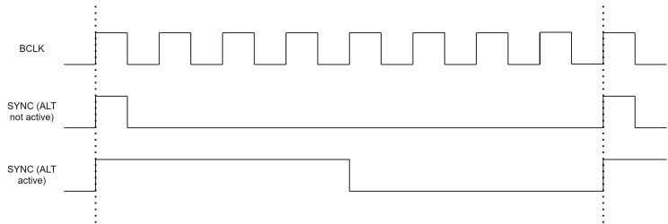
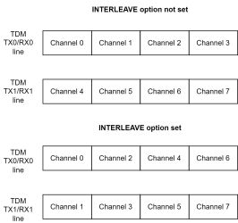

JSON configuration
The mass storage class USB endpoint is used to pass the needed A2B configuration as a JSON file. To access it, opens the CONFIG.TXT file. Please be aware that JSON configuration is case sensitive. By default, it contains the following configuration:
{
"Version": "x.xx",
"Name": "Default",
"ResetOnNew": "True",
"A2BRole": "Master",
"AudioResolution": 16,
"UsbInputChannels": 2,
"UsbOutputChannels": 2,
"RunInProtobufMode": "True",
"SupplyVoltage": 5000,
"AudioRouteMatrixDownstream": [
[1],
[2],
],
"AudioRouteMatrixUpstream": [
[1],
[2],
],
"A2BMasterConfig" : {
"SlavesOnBus": 1,
"DnSlots": 8,
"UpSlots": 8,
"AutoDiscovery": "False",
"SlaveConfiguration":[
{
"Node": 0,
"DnSlots": 0,
"LocalDnSlots": 8,
"UpSlots": 0,
"LocalUpSlots": 8,
"PowerConfig": "High",
"CableLength": 4,
"ConfigureTDM": "True",
"TdmTxLines": 1,
"TdmRxLines": 1,
"TDMMode": "TDM8",
"TDMOptions": ["EARLY", "INV", "ALT"]
}
]
},
"A2BSlaveConfig":
{
"TdmRxChannels": 1,
"TdmTxChannels": 1
}
}
To configure the A2Bridge the following options can be changed.
Version
The version of the JSON configuration. It needs to be compatible with A2Bridge. The user does not need to change it.
Name
The name of the configuration. Users can change it to save the configuration title.
ResetOnNew
This option is used to configure the behavior on new configuration save. If it is set to True the device will be reset on new configuration uploaded.
A2BRole
Option to configure the A2B role. It can be set to one of these options: “Master” or “Slave”
AudioResolution
Audio resolution in bits per sample.
UsbInputChannels
Number of channels that are send to the device from the PC.
UsbOutputChannels
Number of channels that are send to the PC from A2Bridge box.
RunInProtobufMode
If this option is set, A2Bridge will start automatically in protobuf COM port mode.
SupplyVoltage
Voltage in mV requested to supply connected to USB power delivery port. This voltage will be transfered to A2B bus.
AudioRouteMatrixDownstream
Matrix of the channels transmitted to the A2B bus. Each row is an output channel from the USB interface and each element within a row is an A2B output channel to which the corresponding USB channel’s audio will be routed.
"AudioRouteMatrixDownstream": [
[A2B Channel, A2B Channel …], - Channel 1 coming from USB
[A2B Channel, A2B Channel …], - Channel 2 coming from USB
…
],
As an example we will create the configuration in which there will be 3 USB input channels and 10 A2B output channels. We want to forward 1st USB channel to A2B channels: 1,2,3,4,5,6. 2nd USB channel will be forwarded to 7,8 A2B channels and the last 3rd channels will be forwarded to 9th A2B channel.
"AudioRouteMatrixDownstream": [
[1, 2, 3, 4, 5, 6], - USB Channel 1 -> A2B Channels 1,2,3,4,5,6
[7, 8], - USB Channel 2 -> A2B Channels 7,8
[9] - USB Channel 3 -> A2B Channel 9
]
AudioRouteMatrixUpstream
Matrix of the channels received from A2B bus and transmitted to USB bus. Each row represents A2B channel received from the bus and each element within a row is an USB output channel number.
!!! info Attention:
It works opposite to AudioRouteMatrixDownstream.
A2BMasterConfig
Contains the configuration used when the device is set to “Master” mode.
SlavesOnBus
Number of slaves available on A2B bus.
DnSlots
Number of down slots going out from the device.
UpSlots
Number of the up slots coming to the device.
AutoDiscovery
Setting this flag to true will cause the A2B discovery to be triggered every 500ms as long as the A2Bridge doesn't reach the Normal state (A2B discovery successful)
SlaveConfiguration
Contains the table of the slave configurations. Each slave configuration should contain following properties:
Node
Node number. The order of the node counting from 0
DnSlots
Number of channels forwarded downward.
LocalDnSlots
Number of the slots coming from the upper-node consumed by the current node.
UpSlots
Number of slots forwarded upward.
LocalUpSlots
Number of slots produced by current node. The number of slots send up to the upper node (to master direction) is equal to UpSlots + LocalUpSlots
PowerConfig
Power configuration. Can be set to one of those values: High or Low
CableLength
Length of the cable to the upper node.
ConfigureTDM
If this option is set the slave TDM configuration will be set by A2Bridge. Can be set to False if the node is configured by itself.
TdmTxLines
Number of TDM TX lines coming from the node (from A2B transceiver to the slave µC)
TdmRxLines
Number of TDM RX lines coming to the node (from slave µC to slave A2B transceiver)
TDMMode
TDM mode. Should be set to the one of the following values: TDM2, TDM4, TDM8, TDM12, TDM16, TDM20, TDM24, TDM32. TDMx is a property which describes the number of channels in one TDM frame.
TDMOptions
Additional TDM configuration. This is the table of flags used for TDM communication.
EARLY
SYNC pin changes one cycle before the MSB of data channel 0
ALT
When not set SYNC pin is active for one BCLK cycle at the start of each sampling period, otherwise SYNC is active for 50% of sampling period

INV
Invert Sync signal. When set falling edge of sync references the first channel otherwise it is rising edge.
RXBCLKINV
When this flag is set DRX signal is sampled on falling edge of BCLK.
TXBCLKINV
When this flag is set DTX pin is changed on the falling edge of BCLK.
TDMSS
when this flag is set the slaves TDM slot length is 16 bits; 32 bits otherwise
INTERLEAVE
When this option is set, the channels are interleaved between TDM lines.

A2BSlaveConfig
contains the following options used when A2BRole set to Slave:
TdmRxChannels
Number of TDM RX channels (from A2B transceiver to slave µC)
TdmTxChannels
Number of TDM TX channels (from slave µC to A2B transceiver)